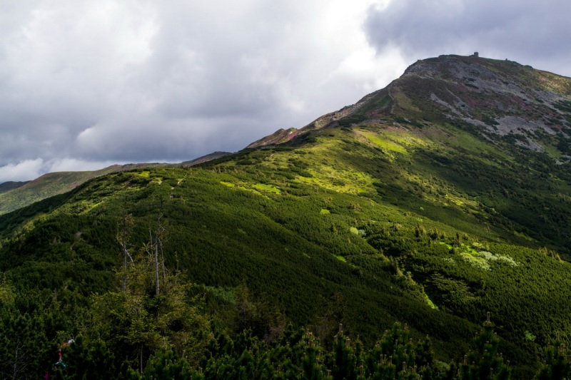
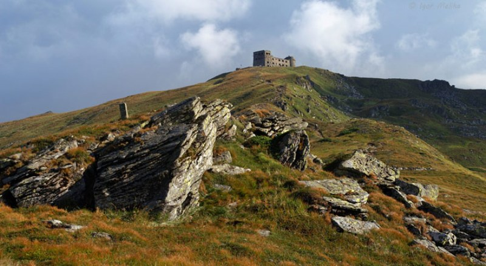
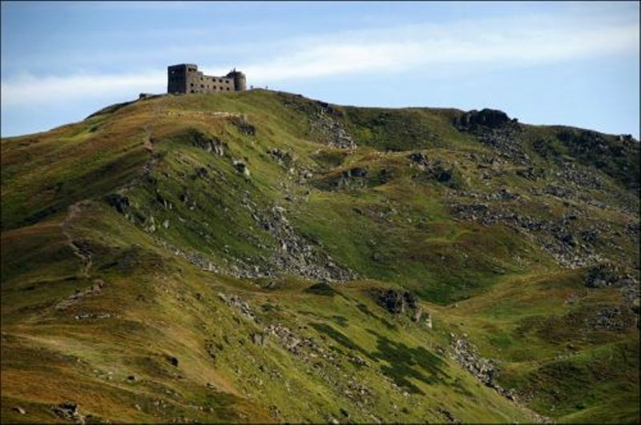

Піп Іва́н Чорногірський
Гора масивна, має пірамідальну форму, у привершинній частині — кам'яні розсипища. Є давньольодовикові форми рельєфу. Складається з пісковиків. Вкрита переважно субальпійською рослинністю. Поширені чагарники (яловець сибірський, рододендрон) і ялинові ліси (до висоти 1500–1600 м).
Розташована в межах Карпатського національного природного парку.
Вершина на довоєнних польських картах позначена як стовп № 16. На вершині — руїни польської астрономо-метеорологічної обсерваторії за назвою Білий Слон.
Маршрут
Маршрут з села Ільці (за 5 км від смт Верховина): на роздоріжжі в Ільцях треба чекати попутній транспорт (ГАЗ-66, ЗІЛ-131) до села Дземброні (рейсовий автобус буває 1—2 рази на день), яким можна доїхати до самого села або до роздоріжжя (за 5 км до Дземброні). В селі є вказівник «Маршрут: с. Дземброня — г. Піп-Іван». По всій довжині — маршрут найвищої складності, він має червоні позначки на камінні та деревах.
Піднявшись на гору Смотрич можна побачити Піп Іван, відстань до якого становить 4 км.


